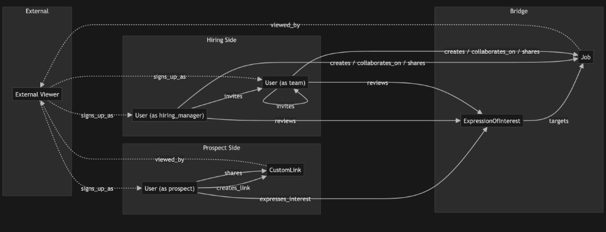

How We Measure and Grow a Network
Akshay Gupta
Traditional recruiting tools are databases — you put candidates in, you search them, you pull them out.
Helix is different. Every user, every job, every expression of interest creates a connection. The value isn't in any single record — it's in the structure of connections between them.
The product question isn't "what features do we build?" It's "how do we grow and strengthen the network?"

User — the actor. Can play any role depending on context.
Job — the connecting node. Every interaction flows through a job.
Expression of Interest (EOI) — the bridge between prospects and hiring teams.
Custom Link — the prospect's viral unit. A shareable profile link used in external applications.
A single user can be a hiring manager on one job and a prospect on another.
The persona isn't an attribute of the person — it's determined by which edge they're participating in.
| Persona | Determined by |
|---|---|
| Hiring Manager | Designated decision-maker on a job |
| Team (Recruiter / Member) | Collaborates on a job they didn't create as HM |
| Prospect | Expressed interest in a job via an EOI |
This is the key structural insight: the same person can exist on both sides of the network simultaneously.
Helix Size measures the total weight of the network — how many users are connected to how many jobs, on both sides.
Hiring side: How many hiring-side users, weighted by their team connections to jobs.
Prospect side: How many prospects, weighted by their expressions of interest.
Helix Size goes up when we add users, add jobs, or create more connections between them.
We don't collapse health into one score. Three metrics, each measuring a different structural property:
Are jobs getting enough prospect interest? If this is too low, hiring managers churn because the platform doesn't deliver candidates.
Are prospects using the tools that make Helix valuable to them? A prospect who creates custom links is investing in the platform for their job search.
What fraction of users participate on both sides? A user who is both a prospect and a hiring manager is the most valuable node in the network.
Top-line metric decomposes into health gauges, which are fed by loop throughput, which decomposes into funnel stages, which map to trackable events.
The network doesn't grow linearly (add one user, get one user). It grows through viral loops — closed paths through the graph where each completion adds new nodes and edges.
Five loops in Phase 1. Each is a different path through the network, triggered by a different human behavior.
The network grows every time a loop completes.
A hiring manager or recruiter shares a job externally, bringing new prospects into the network.
Funnel: Job shared externally → Link viewed → Viewer signs up → New user expresses interest
Highest distribution surface — every share event reaches many people. Primary volume driver.
A hiring manager or recruiter invites colleagues to collaborate on a job, expanding the hiring side.
Funnel: Invite sent → Invite viewed → Invitee signs up → Invitee collaborates on job
Variant B (recruiter pulls in a new HM) is high-leverage — the invited HM arrives with a job already set up and lands directly in the review flow.
A prospect shares a job opportunity or their profile with peers, bringing new prospects into the network.
Funnel: Prospect shares → Friend views → Friend signs up → Friend expresses interest
This is a designed behavior — we need to validate whether prospects share naturally or whether it requires product investment to trigger.
A prospect who joined to apply for a job later posts their own job, crossing from the prospect side to the hiring side.
Funnel: Single-surface user exists → Activates second surface → Becomes dual-persona
Most valuable loop for long-term health. Each bridge creates a new job that feeds Loops 1, 2, and 3. But no frequency lever — depends on life circumstances. Product lever is reducing friction, not increasing distribution.
A prospect creates a custom link and uses it when applying to external jobs. The hiring contact views the profile on Helix and signs up.
Funnel: Custom link created → Used in application → HM views profile → Signs up → Creates job
Prospect-side viral engine. Directly fed by Prospect Activation — more custom links per prospect means more Loop 5 triggers. Brings in hiring-side users who then trigger Loops 1 and 2.
Not all loops are equal. The right way to rank them is throughput — how many new users per eligible user per day.
A loop that converts well but rarely triggers produces less growth than a loop that converts modestly but triggers constantly.
Example: A loop that triggers 10 times/user/day with moderate conversion produces 150x more growth than a loop with perfect conversion that triggers once a month.
The dominant variable is trigger frequency — how often the underlying human behavior naturally occurs.
A single node can trigger multiple loop instances simultaneously:
Loops also amplify each other: Custom Link Virality (Loop 5) brings in hiring-side users who trigger Job Sharing (Loop 1) and Team Invite (Loop 2).
Prioritized by expected throughput impact:
| Priority | Loop | Why |
|---|---|---|
| 1 | Job Sharing | Broadest distribution surface; measure reach per share and landing page conversion |
| 2 | Custom Link Virality | Prospect-side viral engine; measure how often prospects use links externally and profile page conversion |
| 3 | Team Invite | Frequency bounded by team size; conversion rate is the primary lever |
| 4 | Prospect Referral | Designed behavior; instrument to learn if it happens naturally |
| 5 | Cross-Persona Bridge | Each bridge creates a new job; measure bridge rate and time-to-bridge |
Helix Size tells us how big the network is.
Health metrics tell us if the structure is sound.
Viral loop throughput tells us how fast it's growing.
Funnels tell us where users convert or drop off.
Input events are what we actually instrument and track.
Each layer decomposes into the one below it. Every trackable event rolls up to Helix Size.